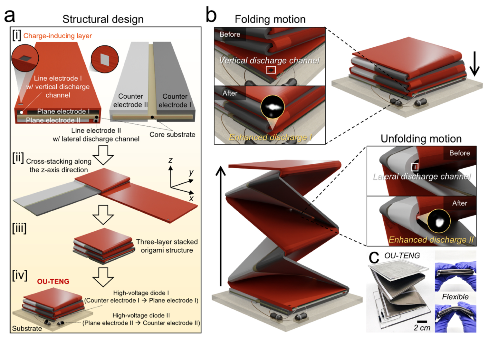
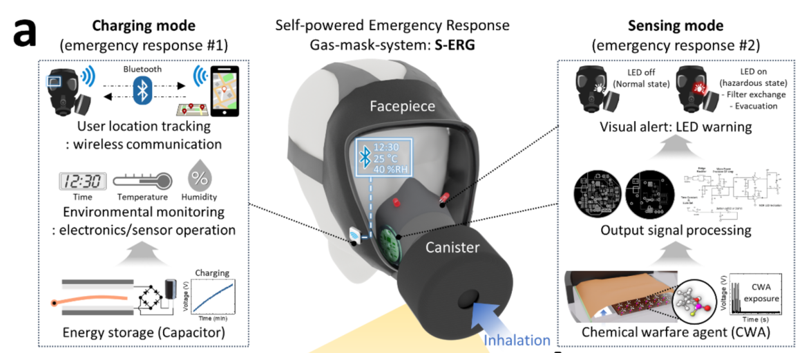
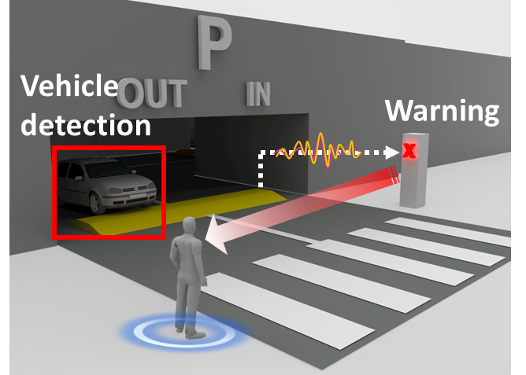
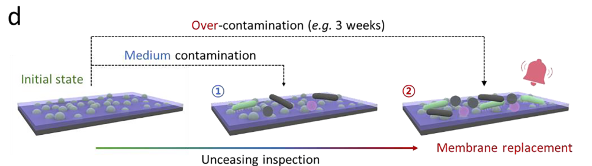
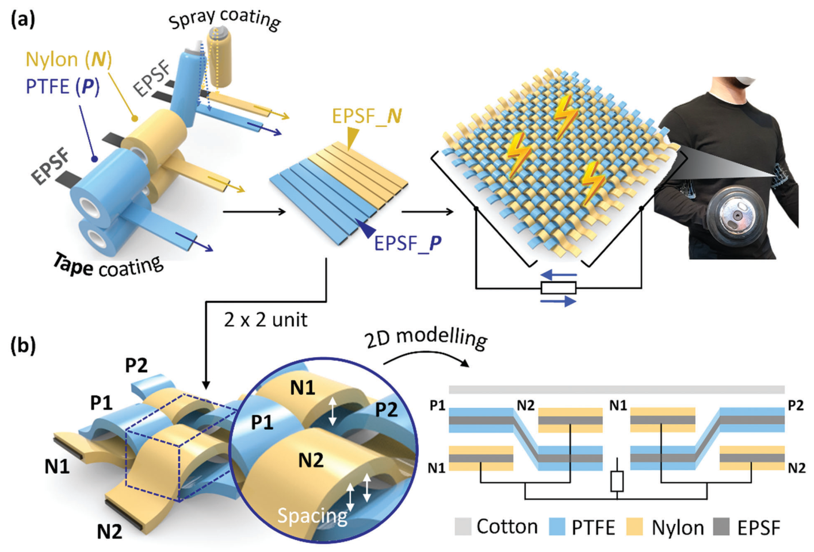
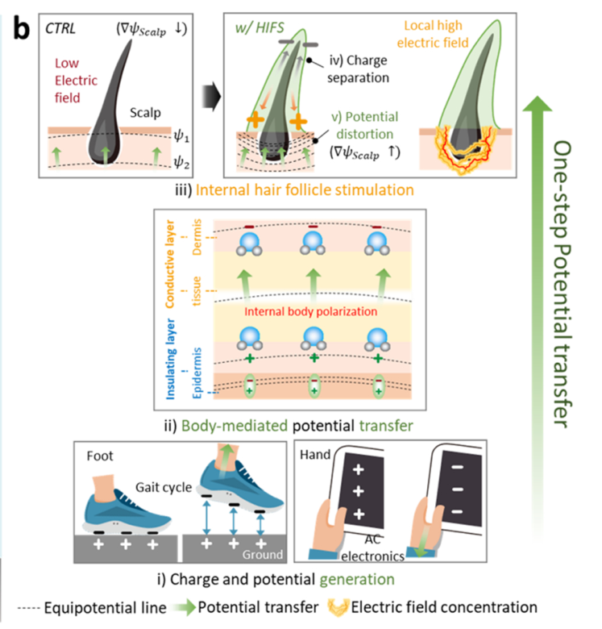

02 / RESEARCH
Research areas주요 연구 분야
Our research is built on materials and device engineering—from functional surfaces and interfaces to electrode design, fabrication, packaging and system integration. We develop these ideas into energy harvesters, self-powered safety systems, wearable bioelectronics and nanobiosensors.기능성 재료와 표면·계면, 전극 구조를 설계하고, 이를 실제 디바이스의 제작·패키징·시스템 통합으로 연결합니다. 이러한 재료·소자 설계 역량을 바탕으로 에너지 하베스팅, 자가발전 안전센서, 웨어러블 바이오전자, 나노바이오센서를 개발합니다.
01 / RESEARCH AREA
Energy harvesting에너지 하베스팅
We design the materials, interfaces and device structures that govern charge generation, transport and discharge, and fabricate energy harvesters for airflow, sports and body motion, and water.전하의 생성·이동·방전을 좌우하는 재료, 계면, 소자 구조를 설계하고 제작합니다. 이를 바람, 스포츠·신체 움직임, 물의 에너지를 전기로 바꾸는 발전 소자로 구현합니다.
Charge transport & high-output generation전하 이동 제어와 고출력 발전
Ion-enhanced field emission and direct electron flow address the low-current limitations of conventional triboelectric generators. We combine the selection of charge-inducing films and electrodes with unidirectional charge accumulation, diode-assisted polarization and discharge-channel design in plate, rotating-disk and origami devices.이온 강화 전계방출과 직접 전자 이동으로 기존 마찰대전 발전기의 낮은 출력 전류를 개선합니다. 대전층·전극 재료의 선정에 단방향 전하 축적, 다이오드 기반 분극 제어, 방전 통로 설계를 결합해 평판형·회전 디스크형·종이접기형 소자를 구현합니다.
Device design, fabrication & validation디바이스 설계·제작·검증
Our work connects electrode geometry, layer arrangement and mechanical structure to fabrication, assembly and prototype testing. We optimize these design variables together, evaluate peak and RMS output, and verify usable energy through capacitor charging and operation of electronics.전극의 형상과 배치, 재료의 적층 구조, 기계적 구동 방식을 설계하고 실제 소자의 제작·조립·시제품 검증까지 연결합니다. 설계 변수를 함께 최적화하고, 순간 최대 출력과 실효값(RMS), 커패시터 충전 및 전자기기 구동을 통해 성능을 확인합니다.

Airflow harvesting & flutter dynamics공기 흐름과 플러터를 이용한 발전
Charge-accumulating flutter, unidirectional charge-supplying flutter and bidirectional flutter structures convert airflow into repeated electrical generation. Flagpole, electrode and discharge-gateway designs are tuned to the motion of the fluttering layer.전하 축적형·단방향 전하 공급형·양방향 플러터 구조로 공기 흐름을 반복적인 전기 출력으로 변환합니다. 진동하는 막의 움직임에 맞춰 지지대, 전극, 방전 통로를 설계합니다.
Materials & interface engineering재료·계면 설계와 제작
We construct nano-oil barriers by combining oil-absorbing sheets with oil infusion, creating a contact interface that can retain a thin lubricant layer during repeated fluttering. Material selection, surface characterization and repeated-motion testing link interface design to stable charge generation and mechanical durability.기름 흡수 시트와 오일 주입 공정을 결합해 나노 오일 계면을 형성하고, 반복 진동 중에도 얇은 윤활층이 유지되도록 설계합니다. 재료 선정, 표면 분석, 반복 구동 시험을 통해 계면 설계가 안정적인 전하 생성과 기계적 내구성으로 이어지는지 확인합니다.

Sports & human-motion energy harvesting스포츠·신체 움직임 기반 에너지 하베스팅
Our commercial soccer-ball-integrated generator places aluminum electrodes between the PVC outer shell and rubber inner tube in a fully packaged structure. Material selection, electrode size and internal integration are designed around kicking, bouncing and rolling, with repeated-impact testing to assess durability. Oscillating, yo-yo-inspired and slinky-inspired devices extend this approach to other forms of motion and hybrid generation.상용 축구공의 PVC 외피와 고무 내피 사이에 알루미늄 전극을 삽입해 일체형 발전 소자를 제작했습니다. 발로 차기·튕기기·구르기 동작에 맞춰 재료, 전극 크기와 내부 구조를 설계하고 반복 충격 시험으로 내구성을 평가합니다. 진자 운동형·요요형·슬링키형 소자로 연구를 확장해 다양한 움직임과 하이브리드 발전도 다룹니다.
Water motion & droplet energy물의 움직임과 물방울 에너지
Water motion, impact and sloshing drive charge separation and accumulation. Electrode arrangements, container structures and spray-fabricated superhydrophobic surfaces are designed to harvest liquid motion and water–solid contact.물의 이동·충돌·출렁임으로 전하를 분리하고 축적합니다. 전극 배치와 용기 구조, 스프레이 공정으로 제작한 초발수 표면을 설계해 액체의 움직임과 물–고체 접촉 에너지를 활용합니다.

02 / RESEARCH AREA
Self-powered safety sensors & systems자가발전 안전센서·시스템
We integrate energy harvesting and sensing into protective equipment, transport infrastructure and functional membranes.보호장비, 교통·이동 수단, 기능성 막에 발전과 센싱 기능을 통합해 실제 사용 환경에 맞는 자가발전 시스템을 개발합니다.
Military gas-mask systems군용 방독면 센서시스템
Inhalation-driven flutter generators are integrated inside gas-mask canisters, balancing electrical output, installation space and breathing resistance. The systems connect stored energy to environmental monitoring and wireless tracking, and demonstrate self-powered chemical-threat warning.호흡으로 작동하는 플러터 발전기를 방독면 정화통 안에 통합하고, 출력·설치 공간·호흡 저항을 함께 고려합니다. 저장한 에너지를 환경 모니터링과 무선 위치 추적에 활용하고, 자가발전 방식의 화학작용제 감지·경고 기능을 연구했습니다.

Industrial protective equipment산업용 보호장비
The charge-accumulating-flutter-based generator (CAF-TENG) connects directly to a commercial mask valve. Repeated charge accumulation and discharge support breathing-powered safety and respiration-monitoring lights, as well as capacitor charging for wireless tracking. Related work also explores rotating mask-valve generators.전하 축적형 플러터 발전기(CAF-TENG)를 상용 마스크 밸브에 직접 연결했습니다. 반복적인 전하 축적과 방전을 이용해 호흡으로 안전 조명·호흡 모니터링 조명을 구동하고, 무선 위치 추적을 위한 에너지를 저장합니다. 회전형 마스크 밸브 발전기도 함께 연구했습니다.

Mobility, infrastructure & impact sensing모빌리티·시설·충격 감지
Speed-bump devices provide vehicle warning and velocity sensing; tire-integrated devices support bicycle safety lighting and pressure monitoring. Omnidirectional oscillating generators extend self-powered sensing to impacts arriving from different directions.과속방지턱 소자는 차량 경고와 속도 감지에, 타이어 통합형 소자는 자전거 안전 조명과 압력 모니터링에 활용합니다. 전방향 진자 운동형 발전기를 이용해 여러 방향에서 발생하는 충격도 감지합니다.

Antibacterial membranes & contamination sensing항균막과 오염 상태 감지
Superhydrophobic antibacterial membranes combine bacterial repulsion and contact killing with droplet energy harvesting. Changes in the electrical signal indicate contamination or membrane damage, linking surface condition to a self-powered replacement alert.초발수 항균막에 세균 부착 억제·접촉 살균과 물방울 발전 기능을 결합합니다. 오염이나 막 손상에 따른 전기 신호 변화를 감지해, 표면 상태 확인과 교체 시점 알림으로 연결하는 연구입니다.

03 / RESEARCH AREA
Wearable bioelectronics웨어러블 바이오전자
We develop mechanically resilient wearable electrodes and body-mediated electrical stimulation systems.몸의 움직임을 견디는 웨어러블 전극과 인체를 매개로 한 전기자극 시스템을 연구합니다.
Silk-fibroin electrodes & wearable textiles실크 피브로인 전극과 웨어러블 직물
Molecular crosslinking and stress dissipation give silk-fibroin electrodes mechanical resilience. Core–shell fibers woven into clothing combine stretchable electrodes with triboelectric energy generation for wearable bioelectronics.분자 가교와 응력 분산 특성을 이용해 실크 피브로인 전극의 기계적 안정성을 높입니다. 코어–셸 섬유를 직물로 구성해 유연 전극과 마찰대전 발전 기능을 결합한 착용형 바이오전자 소자를 개발합니다.

Body-mediated electrical stimulation인체 매개 전기자극
Human activity and ambient electrical energy create body-mediated potentials that can be concentrated locally. Conductive gels and electrode-equipped head accessories are studied for hair-follicle stimulation, connecting field simulations and electrical measurements with preclinical biological evaluation.신체 활동과 주변 전기 환경에서 발생하는 전위를 인체를 통해 전달하고 특정 부위에 집중시킵니다. 전도성 젤과 전극이 부착된 모자·머리핀 등을 이용한 모낭 자극을 연구하며, 전기장 해석·전기적 측정과 전임상 생물학적 평가를 연결합니다.

04 / RESEARCH AREA
Nanobiosensors나노바이오센서
We study the separation, capture and analysis of extracellular vesicles (EVs), combining microfluidics with nanostructured interfaces and electric-field control.세포외소포(EV)의 분리·포획·분석을 연구하며, 미세유체 기술에 나노구조 계면과 전기장 제어를 결합합니다.
Device studies in progress소자 연구 진행 중
EV separation & microfluidic integrationEV 분리와 미세유체 통합
Our published review examines conventional EV separation methods and emerging filtration–microfluidic and dielectrophoresis–microfluidic approaches. These principles guide the development of integrated capture and analysis devices.출판된 리뷰에서는 기존 EV 분리 방법과 여과·유전영동을 미세유체 기술에 결합하는 접근을 정리했습니다. 이를 바탕으로 포획과 분석을 통합하는 소자를 연구합니다.
Nanoporous interfaces & single-EV readout나노다공성 계면과 단일 EV 분석
Ongoing device studies combine the design and fabrication of nanoporous membranes, gold nanostructured sensing interfaces and microfluidic chips. EV capture and washing are connected to nanoplasmonic fluorescence readout, aiming to reduce sample loss and improve biomarker analysis at the individual-vesicle level.진행 중인 연구에서는 나노포어 막, 금 나노구조 검출 계면, 미세유체 칩의 설계와 제작을 결합합니다. EV의 포획·세척과 나노플라즈모닉 형광 검출을 연결해 시료 손실을 줄이고 개별 소포 수준의 바이오마커 분석을 개선하고자 합니다.
Electrokinetic capture & separation전기장 기반 포획·분리
Non-uniform electric fields are investigated for guiding EV capture and separating unbound antibodies. Electrode geometry and operating conditions are designed to improve enrichment while reducing background signals.불균일한 전기장으로 EV를 포획 영역에 모으고 미결합 항체를 분리하는 방법을 연구합니다. 포획 효율을 높이고 배경 신호를 줄이도록 전극 구조와 작동 조건을 설계합니다.